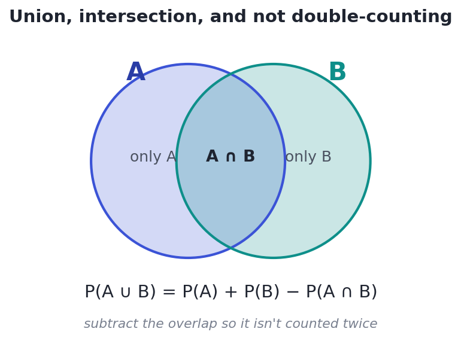
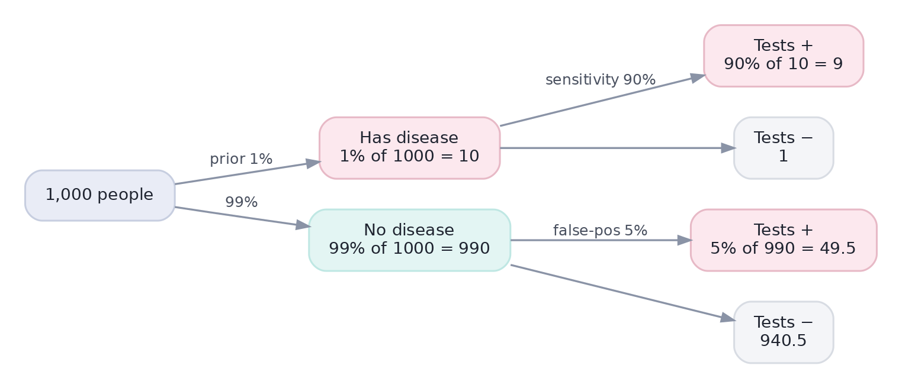
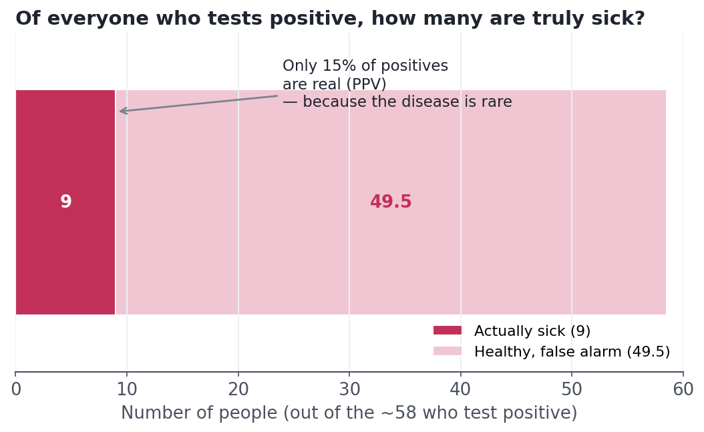

Probability: The Language of Uncertainty
Events, conditional probability, independence, and Bayes — the grammar you need to reason about chance without fooling yourself.
Statistics is reasoning under uncertainty, and probability is the language that uncertainty is written in. Without it you can't say how likely a result is, can't design an experiment, and — most dangerously — can fall for confident-sounding conclusions that are flat wrong. By the end of this lesson you'll be able to do a calculation that the majority of doctors get wrong, and you'll see exactly why their intuition fails.
Concept · foundationsThe vocabulary of chance
Start with the words, because they're used precisely:
- An experiment is any process with an uncertain result (flip a coin, show a user an ad).
- An outcome is one possible result (heads; the user clicks).
- The sample space is the set of all possible outcomes.
- An event is a collection of outcomes you care about (e.g., 'an even number' on a die is the event {2, 4, 6}).
- The probability of an event is a number from 0 to 1 measuring how likely it is: 0 means impossible, 1 means certain, 0.5 means it happens about half the time over many repeats.
Three rules cover most of what you'll need:
- Bounds: every probability is between 0 and 1, and the probabilities of all outcomes in the sample space add to exactly 1.
- Complement: the chance an event does not happen is 1 minus the chance it does. P(not A) = 1 − P(A). (The chance of at least one success is often easiest computed as 1 minus the chance of none.)
- Addition: to find the chance of A or B, add their probabilities — but subtract the overlap so you don't count it twice.

Concept · combining eventsIndependence and the multiplication rule
Two events are independent if knowing that one happened tells you nothing about the other. Separate coin flips are independent; today's and tomorrow's weather are not. For independent events, the chance that both happen is the product of their probabilities:
Two fair coins both landing heads: ½ × ½ = ¼. Five heads in a row: (½)⁵ = 1/32 ≈ 3%.
Assuming independence when it doesn't hold causes real disasters. In the 2008 financial crisis, models treated mortgage defaults as roughly independent; in fact they were strongly linked, so 'one-in-a-million' joint losses happened. Before you multiply probabilities, ask hard: could these really move together?
Concept · the key ideaConditional probability: updating on evidence
Most real questions are conditional: given that something is true, how likely is something else? The conditional probability of A given B, written P(A | B), is the chance of A once you already know B happened:
In words: of all the times B happens, what fraction also have A? You've narrowed the world to B and are asking how much of that world is also A.
This is where intuition starts to slip, and it slips hardest on a famous medical-testing puzzle. Suppose a disease affects 1% of people. A test correctly flags 90% of sick people (its sensitivity) but also wrongly flags 5% of healthy people (its false-positive rate). You test positive. What's the chance you're actually sick? Most people — including most physicians in published studies — guess around 80–90%. Let's trace every person through the test and see the truth.


Worked exampleThe same calculation, in code
Trees are great for intuition; code makes it exact and reusable. Here is the whole computation — count the people in each bucket, then take the fraction of positives who are genuinely sick.
# A test is 90% sensitive and has a 5% false-positive rate.
# The disease affects 1% of people. You test positive. Should you panic?
N = 100_000
prevalence = 0.01 # P(disease)
sensitivity = 0.90 # P(test+ | disease)
false_pos = 0.05 # P(test+ | healthy)
sick = N * prevalence
healthy = N - sick
true_pos = sick * sensitivity
fake_pos = healthy * false_pos
ppv = true_pos / (true_pos + fake_pos) # P(disease | test+)
print(f"Per {N:,} people:")
print(f" sick AND test-positive : {true_pos:>7,.0f}")
print(f" healthy AND test-positive : {fake_pos:>7,.0f}")
print(f" ---------------------------------------")
print(f" P(actually sick | positive) = {ppv:.1%}")
print("Most positives are false alarms -- because the disease is rare to begin with.")Per 100,000 people: sick AND test-positive : 900 healthy AND test-positive : 4,950 --------------------------------------- P(actually sick | positive) = 15.4% Most positives are false alarms -- because the disease is rare to begin with.
A test being '90% accurate' is almost meaningless on its own. When the thing you're screening for is rare, even a small false-positive rate generates a flood of false alarms that swamps the true cases. This same math governs fraud detection, spam filters, rare-disease screening, and security alerts — any time you hunt for something uncommon. Always ask for the base rate before trusting a positive.
★ Key points to remember
- Probability is a number in [0, 1]; all outcomes in the sample space sum to 1; P(not A) = 1 − P(A).
- Addition (or): P(A or B) = P(A) + P(B) − P(A and B) — subtract the overlap.
- Multiplication (and): P(A and B) = P(A)×P(B) only if the events are independent. Question independence before multiplying.
- Conditional: P(A | B) = P(A and B) / P(B) — narrow the world to B, then ask how much is also A.
- P(A | B) is not the same as P(B | A). With rare conditions, the base rate dominates, so most positives can be false alarms.
◆ Practice▸
Show solution & reasoning
P(heart) = 13/52, P(King) = 4/52. But the King of hearts is in both sets, so adding 13/52 + 4/52 counts it twice. Subtract that one overlapping card: P(heart or King) = 13/52 + 4/52 − 1/52 = 16/52 = 4/13. This is the addition rule: subtract P(A and B) so the intersection isn't double-counted.
Show solution & reasoning
Of 1,000 emails: 200 are spam, 800 are real. Flagged spam = 98% × 200 = 196. Flagged real = 3% × 800 = 24. Total flagged = 196 + 24 = 220. P(spam | flagged) = 196 / 220 ≈ 89%. Notice it's high here — unlike the disease case — because spam isn't rare (20% base rate), so true positives dominate. Same math, opposite conclusion, all because of the base rate.
◎ Deep dive: Bayes' theorem and the prosecutor's fallacy▸
The calculation you just did is Bayes' theorem in disguise. Starting from the conditional-probability definition, P(A | B) = P(A and B) / P(B), and writing the overlap two ways, you get:
posterior = (likelihood × prior) / evidence
For the disease test: P(sick | +) = P(+ | sick)·P(sick) / P(+). The numerator is 0.90 × 0.01 = 0.009. The denominator P(+) totals both ways to test positive: 0.009 + (0.05 × 0.99) = 0.0585. Dividing gives 0.009 / 0.0585 ≈ 0.154 — the same 15.4% as the code. The prior P(sick) = 1% is the base rate; the test merely updates it to the posterior of 15%.
This also names a courtroom blunder, the prosecutor's fallacy: confusing P(evidence | innocent) with P(innocent | evidence). 'The chance of this DNA match in an innocent person is 1 in a million' does not mean 'the chance this person is innocent is 1 in a million' — you must weigh the base rate of who could have left it. The same swap that fools doctors has sent innocent people to prison.
Base-rate questions are a data-science interview staple, often as the medical-test puzzle or a fraud-detection variant. Don't reach for the formula first — narrate natural frequencies ('imagine 1,000 people…'), which is clearer and harder to botch, then name it as Bayes' theorem and stress that P(A|B) ≠ P(B|A).